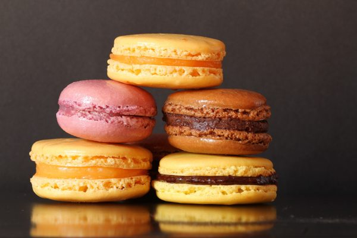
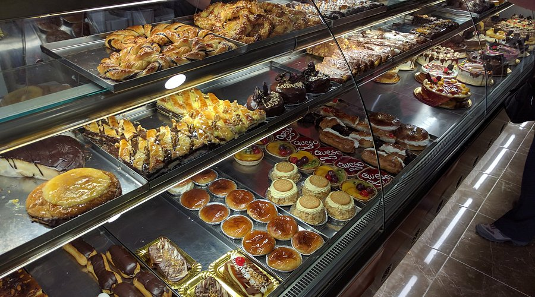

¿Tienes curiosidad por conocer alguna de nuestras recetas? Descubre cómo preparar deliciosos postres en casa


Descubre recetas deliciosas y sencillas para preparar en casa
si buscas información sobre repostería casera o algo más específico puedes
consultar nuestras secciones dedicadas a cada tema.
Somos una tienda especializada en repostería casera, donde encontrará una amplia variedad de productos deliciosos y saludables.
Contamos con ingredientes de la más alta calidad y recetas tradicionales que han sido perfeccionadas a lo largo de los años.
Ofrecemos un servicio de entrega a domicilio para que puedas disfrutar de nuestros productos en la comodidad de tu hogar.

Te enseñamos cómo preparar deliciosos postres en casa como los siguientes:
Brownie de chocolate
Tarta de queso
Galletas caseras
Explora nuestras recetas más populares y deliciosas:
¿Tienes curiosidad por conocer alguna de nuestras recetas? Descubre cómo preparar deliciosos postres en casa

¿Por qué elegir la repostería casera?
Pues nosotros te ofrecemos...
y muchas más ventajas que descubrirás al preparar postres en casa.